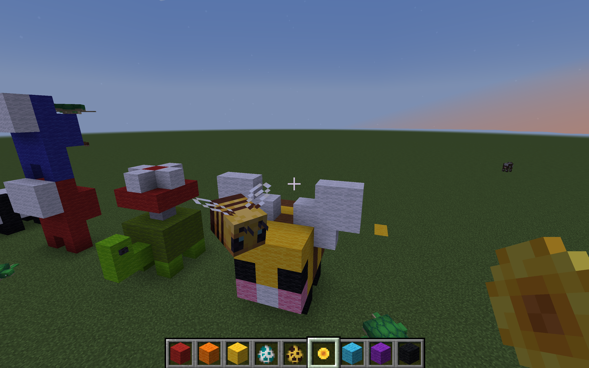
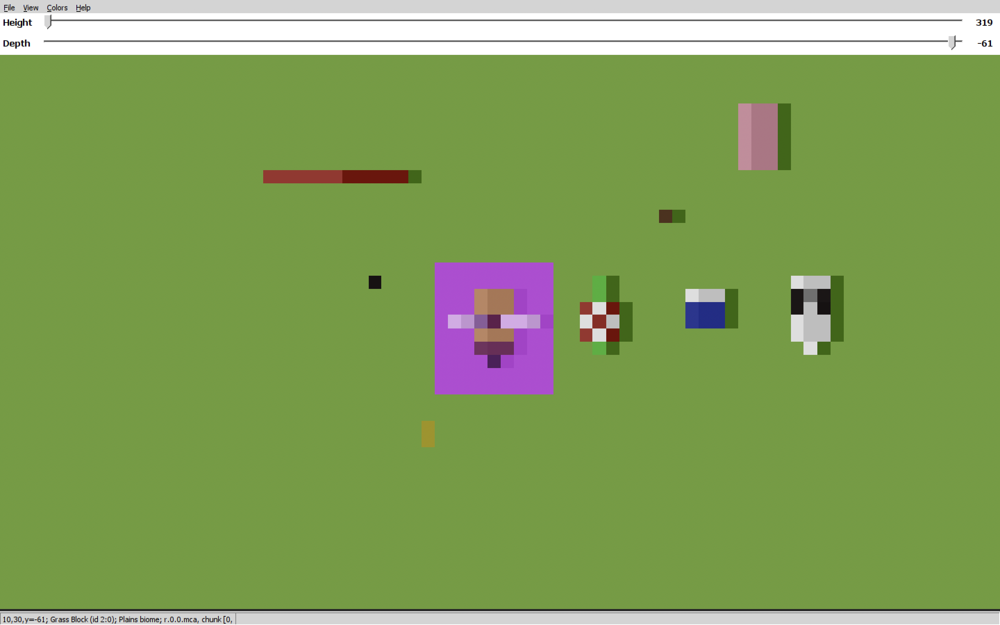
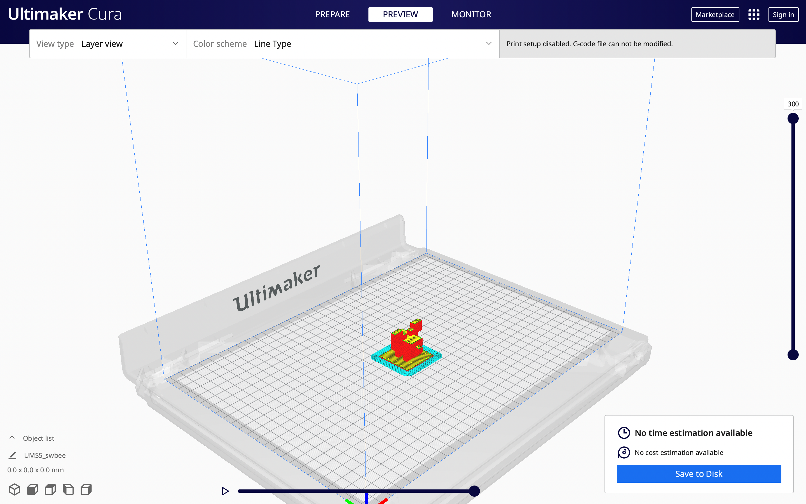
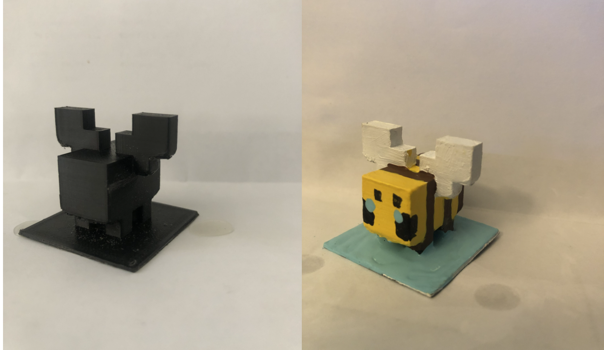

<!DOCTYPE html>
<html>
<head>
<style>
body {
  background-color:ivory;
}
</style>
</head>
<body>
</body>
</html>
<!DOCTYPE html>
<html>
<head>
  <title>SWmc</title>
  <meta name="viewport" content="width=device-width, initial-scale=1">
<style>
body {
  font-family: Arial, Helvetica, sans-serif;
  font-size: 20px;
}

#myBtn {
  display: none;
  position: fixed;
  bottom: 20px;
  right: 30px;
  z-index: 99;
  font-size: 18px;
  border: none;
  outline: none;
  background-color: black;
  color: white;
  cursor: pointer;
  padding: 5px;
  border-radius: 5px;
}

#myBtn:hover {
  background-color: #559;
}
</style>
</head>
<body>

<button onclick="topFunction()" id="myBtn" title="Go to top">Top</button>


<script>
//Get the button
var mybutton = document.getElementById("myBtn");

// When the user scrolls down 20px from the top of the document, show the button
window.onscroll = function() {scrollFunction()};

function scrollFunction() {
  if (document.body.scrollTop > 20 || document.documentElement.scrollTop > 20) {
    mybutton.style.display = "block";
  } else {
    mybutton.style.display = "none";
  }
}

// When the user clicks on the button, scroll to the top of the document
function topFunction() {
  document.body.scrollTop = 0;
  document.documentElement.scrollTop = 0;
}
</script>

</body>
</html>

<style>
img {
  display: block;
  margin-left: auto;
  margin-right: auto;
}

</style>
</head>
<body>


<center><h1>3-D printing with minecraft </h1></center>

<center><a href='SWportfolio.html'><button type="button" class="btn btn-primary btn-lg">Home</button></a></center>

<center><p>Using the game Minecraft we created our desired 3-D image using the blocks in the game. As you can see below I choose to make a Minecraft bee.</p></center>





<center><p>Then by using the program "mineways", we were able to scan the sculpture we created and turn it into a 3-D STL file</p></center>




<center><p>And so after we have created the 3-D STL file. We loaded up another program "Ultimaker Cura", which allows us to adjust and resize our 3-D model to how big or small we wanted it to be printed out.</p></center>



<center><p>Finally last but not least, After waiting for the print, I sanded the extra plastic from the sculpture and painted it.</p></center>




</body>
</html>